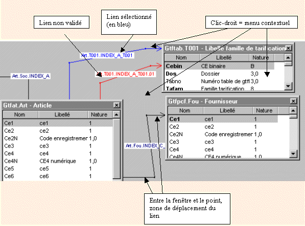

Définition
Un schéma est une représentation graphique d’une partie des liens d’un dictionnaire.
Vous sélectionnez les élements (tables et liens) que vous désirez voir à l’écran.
Un schéma est identifié par un nom attribué lors de sa création.
Création d’un schéma
La création d’un schéma peut être automatique ou manuelle.
Une fois le schéma créé, il est toujours possible d’afficher ou de masquer des éléments.
Création automatique
Le choix Créer un schéma pour cette table du menu contextuel des tables et le choix Créer automatiquement un schéma par table du menu Schémas permettent de créer automatiquement des schémas. Ces schémas sont ajoutés à la liste des schémas de l’arbre de liens.
Création manuelle
Le choix Créer un schéma du menu Schéma ou du menu contextuel de la liste des schémas permettent de créer un nouveau schéma vierge.
Choix des élements affichés dans un schéma
Vous choisissez librement les éléments (tables ou liens) que vous désirez voir dans le schéma.
Les choix Afficher/Masquer cette table dans le schéma en cours, Afficher/masquer ce lien dans le schéma en cours des menus contextuels, permettent de choisir les éléments.
De plus, les boutons  et
et  donnent accès à la liste de toutes les tables et de tous les liens. Il est possible de sélectionner plusieurs éléments et de les afficher.
donnent accès à la liste de toutes les tables et de tous les liens. Il est possible de sélectionner plusieurs éléments et de les afficher.
Couleurs et Tracé des liens
Un lien est matérialisé par une flèche.
Les liens validés sont en noir.
Les liens non validés sont en rouge.
Lorsque vous passez avec la souris sur un lien, celui-ci passe en bleu, indiquant qu’il est sélectionné.
Vous pouvez alors :
appeler les propriétés du lien (clic sur la partie centrale du trait, ou clic sur le nom du lien),
déplacer les flèches sur le pourtour de la fenêtre de départ ou d’arrivée (clic sur la portion de la ligne entre la fenêtre et le point)
appeler un menu contextuel par le clic droit..
